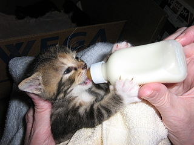

Kittens are one of the most vulnerable animal rescue populations to work with because they are so fragile. They are a high risk population in shelters because they have intense care needs that the shelter might not be prepared to meet.
A "bottle baby" is a kitten that has been orphaned or does not have a lactating cat to feed it. Since kittens are not weaned onto solid food until five to eight weeks old, they need to be fed via bottle until then. Bottle baby fosters have incredibly high needs; they are often very young and not close to weaning. Fostering a bottle baby is signing up for two weeks of intense high need care at the least, as they adjust from having to eat every 2 hours to weaning.
Fostering a kitten that needs to be socialized means a kitten that has not necessarily been around humans before and needs some one on one time to help develop trust.
A cat that is part of a TNR program is an outdoors, or street, cat that has been trapped in a cage and is being housed with a foster up until it has been spayed or neutered and treated for any outstanding medical issues. After that, the cat is released back to where it came from. These cats are likely not able to adapt to being an indoor cat , or ever get used to being around humans.
Hospice care is fostering an older cat, or a cat with a terminal illness. The goal is to free up space in the shelter and to provide the cat with a comfortable and loving place to end their journey.
Sometimes shelters do not have the handpower or time or resources to care for cats that have specific medical needs. Allergies, skin conditions, some contagious infections or worms, etc are all reasons a shelter might put a cat up for foster. Having an attentive foster parent track diet, help deliver medication, and be willing to lighten the shleter's load is often the best place for the cat.
There are certain 'seasons' in animal rescue that might come with higher or lower intakes to your local shelter or rescue. Feline breeding season takes place during the warmer months and is often when shelters and rescues take in the bulk of their cats -- and won't have space for all of them. Soon after a holiday, or when the school year starts and ends, are also times where someone might have to surrender or rehome their animal.